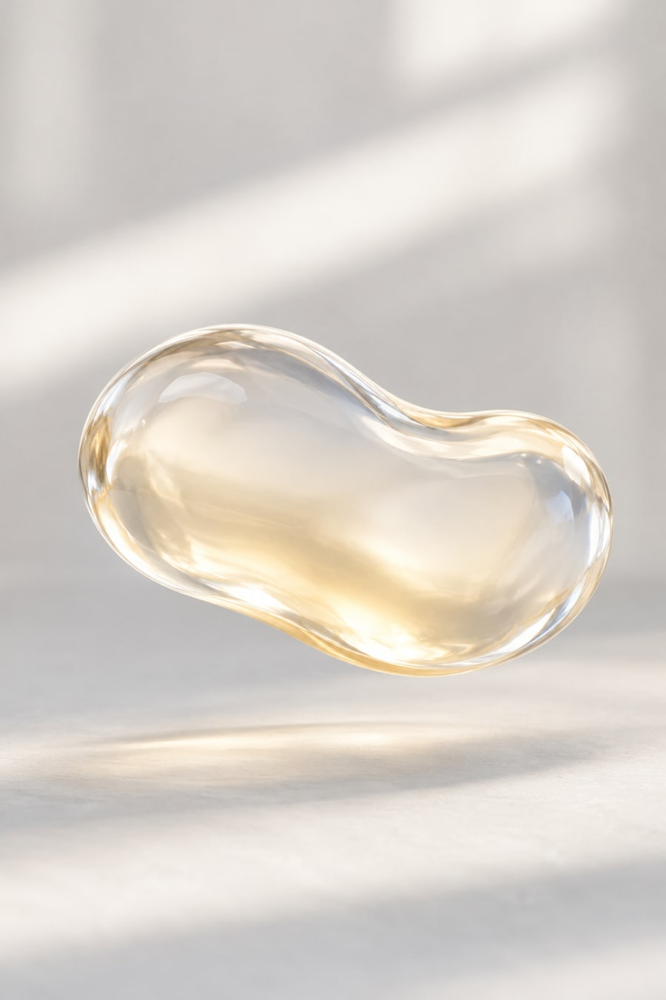
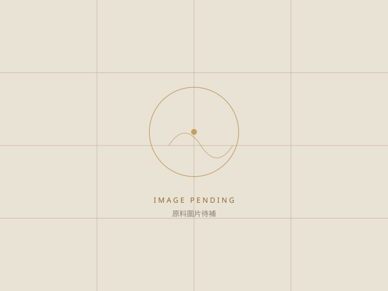

益生菌
- 原料種類
- 益生菌
規格資料整理中，請洽詢確認。
AI材質意象，非實際供貨形態。
BALANCE BODY CONDITION
依官網資訊表查看調節體質相關原料品項、來源與規格說明。
COMMON MATERIALS
以下列出此配方方向較常被指定的原料與其形式。實際可用品項、規格與最小採購量，會依配方設計與供應狀況調整。
本分類依百達醫官網資訊表整理；專利與認證資訊為個別原料資料紀錄，不代表百達醫公司資格。實際供貨規格、證明文件、專利有效期限及適用範圍，請洽業務確認。

規格資料整理中，請洽詢確認。
AI材質意象，非實際供貨形態。

資訊表目前僅列此原料類別，具體品項與規格請洽詢確認。
資訊表目前僅列此原料類別，具體品項與規格請洽詢確認。
資訊表目前僅列此原料類別，具體品項與規格請洽詢確認。
DISCUSS YOUR FORMULA
提供產品訴求與預計劑型，我們會協助評估原料選項、規格與可行的配方組合。
與研發顧問討論